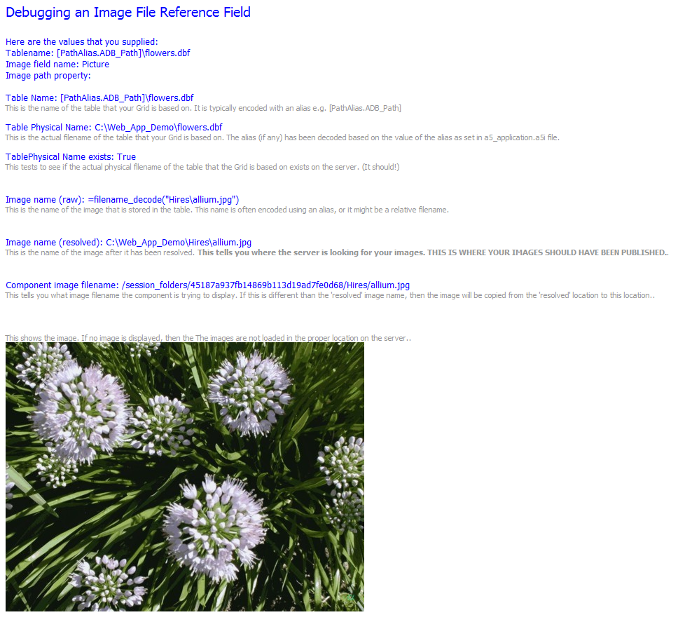

How to Debug Image File Reference Fields
An Image File Reference Field is a field in an native Alpha Five table (.dbf), that contains the filename of an image. The filename it typically encoded using an alias. When you publish a Grid that has an Image File Reference Field it can be tricky to get the images to display properly. You will run into problems if you don't publish your images to the correct location on your server.To help diagnose problems with Image File Reference fields, you can use the special formatting options in the Grid. See How to Debug Image File Reference Images Not Displaying Correctly in a V10 Grid.
If you are still having problems, then create a new .a5w page in your Web Project with the code shown below.
To create the page, create a new empty page. Then switch to Source View, delete everything shown and paste the code shown below into the source view.
You will need to edit the values for 'tableName', 'imageField' and 'imagePathProperty' in the page so that they match values in the Grid component you are debugging.
Save the page and then publish it to your server and then run it.
The page will give you information about where the images should be published.
The image below shows the output from this page when it is run.
<html><head>
<meta content="text/html; charset=unicode" http-equiv=Content-Type><style type=text/css>
.head { font-family:Tahoma; font-size:14pt; color: blue; }
.msg { font-family:Tahoma; font-size:10pt; color: blue; }
.error { font-family:Tahoma; font-size:10pt; color: red; }
.note { font-family:Tahoma; font-size:8pt; color:#969696; }
</style>
<%a5
'--------------------------------------IMPORTANT ---------------------------------------------------------------
'You must replace the values for tableName, imageName and imagePathProperty with actual values for your Component.
'The 'imagePathProperty' value is what you have filled in for the 'Image Path' property in the
'Image Field in the Grid Component. It is often left blank.
dim tableName as c
dim imageField as c
dim imagePathProperty as c
tableName = "[PathAlias.ADB_Path]\flowers.dbf"
imageField = "Picture"
imagePathProperty = ""
'----------------------------------------------------------------------------------------------------------
?"<span class=\"head\">Debugging an Image File Reference Field<br><br></span>"
?"<span class=\"msg\">Here are the values that you supplied:<br>" + "Tablename: " +tableName + "<br>" + "Image field name: " + imageField + "<br>" + "Image path property: "+ imagePathProperty + "<br><br>"
dim physicalTableName as c
physicalTableName = filename_decode(tablename)
?"<span class=\"msg\">Table Name: " + tableName + "<br></span>"
?"<span class=\"note\">This is the name of the table that your Grid is based on. It is typically encoded with an alias e.g. [PathAlias.ADB_Path]<br><br></span>"
?"<span class=\"msg\">Table Physical Name: " + physicalTableName + "<br></span>"
?"<span class=\"note\">This is the actual filename of the table that your Grid is based on. The alias (if any) has been decoded based on the value of the alias as set in a5_application.a5i file.<br><br></span>"
dim flagExists as l
flagExists = file.exists(physicalTableName)
?"<span class=\"msg\">TablePhysical Name exists: " + file.exists(physicalTableName) + "<br></span>"
?"<span class=\"note\">This tests to see if the actual physical filename of the table that the Grid is based on exists on the server. (It should!)<br></span>"
if flagExists = .f. then
?"<span class=\"error\"><br><br>FATAL ERROR: The TablePhysical Name file does not exist. You have not published the table to the correct folder, or the [PathAlias.ADB_Path] is not defined properly in your a5_application.a5i file.<br></span>"
end
end if
?"<br><br>"
dim imageName as c
dim tbl as p
tbl = table.open(physicalTableName)
on error goto imageNotFound
imageName = tbl.data(imageField)
?"<span class=\"msg\">Image name (raw): " + imageName + "<br></span>"
?"<span class=\"note\">This is the name of the image that is stored in the table. This name is often encoded using an alias, or it might be a relative filename.<br></span>"
dim imageNameResolved as c
imageNameResolved = filename_decode(imageName)
?"<br><br><span class=\"msg\">Image name (resolved): " + imageNameResolved + "<br></span>"
?"<span class=\"note\">This is the name of the image after it has been resolved. <b>This tells you where the server is looking for your images. THIS IS WHERE YOUR IMAGES SHOULD HAVE BEEN PUBLISHED.</b>.<br></span>"
tbl.close()
dim tmpl as p
tmpl.request = request
tmpl.session = session
tmpl.serversetting = serversetting
dim decodedfilename as c
decodedFilename = a5w_Decode_IFR(tmpl, imagename, imagePathProperty)
?"<br><br><span class=\"msg\">Component image filename: " + decodedfilename + "</span><br>"
?"<span class=\"note\">This tells you what image filename the component is trying to display. If this is different than the 'resolved' image name, then the image will be copied from the 'resolved' location to this location.</b>.<br></span>"
?"<br><br><br>"
?"<span class=\"note\">This shows the image. If no image is displayed, then the The images are not loaded in the proper location on the server.</b>.<br></span>"
?"<img src=\""+decodedfilename+"\" />"
end
imageNotFound:
tbl.close()
?"Error: The image field name was not found in the table: " + imageField + "<br>"
%>Here is what the page will look like when you run it. (Of course, in your case it will be slightly different because you will have specified your own values for the page parameters).
